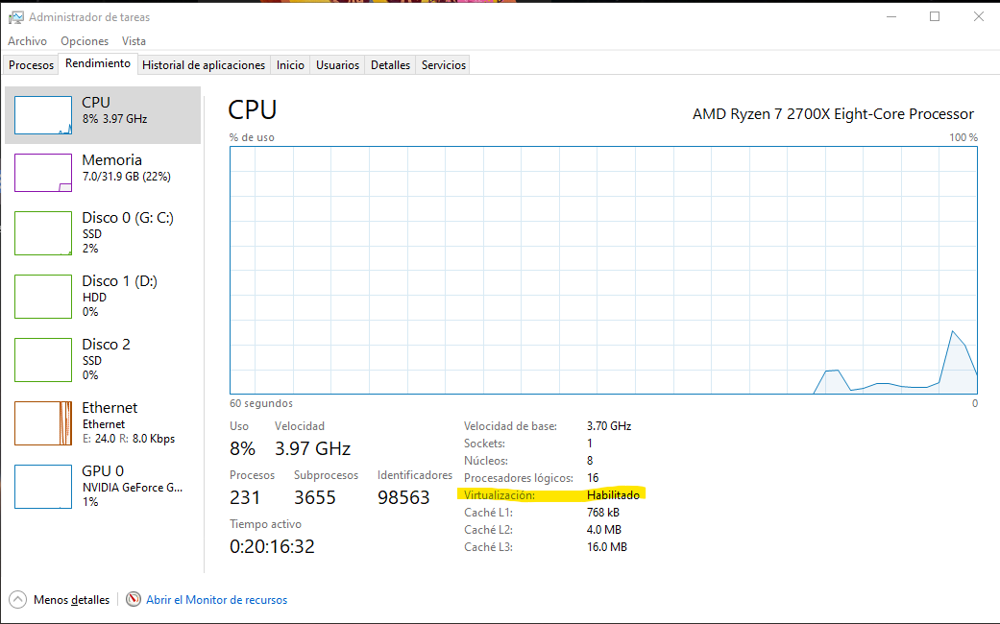
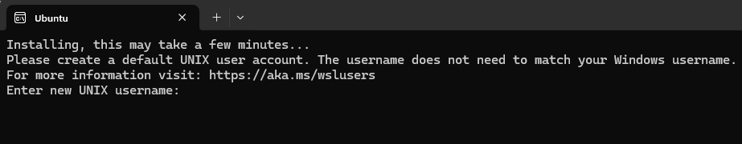

Instalación de Software
Introducción
Este es el manual para la instalación de los programas que se utilizarán durante el curso Patrones filogenéticos: macroevolución y adaptación. Los programas seleccionados son herramientas esenciales para el desarrollo de análisis y actividades dentro del curso.
Los programas a instalar incluyen:
- Visual Studio Code: Un editor de código versátil y personalizable.
- R y RStudio: Software estadístico y su entorno integrado para análisis y visualización de datos.
- RevBayes: Herramienta para realizar análisis bayesianos avanzados en filogenética.
- BAMM (Bayesian Analysis of Macroevolutionary Mixtures): Programa diseñado para explorar dinámicas macroevolutivas, como tasas de diversificación y evolución de rasgos.
A continuación, se presentan las instrucciones detalladas para instalar y configurar cada uno de estos programas, asegurando que los participantes cuenten con todas las herramientas necesarias para aprovechar al máximo el curso.
Visual Studio Code
Descripción
Visual Studio Code (VS Code) es un editor de código fuente ligero pero potente, desarrollado por Microsoft. Es compatible con varios lenguajes de programación y ofrece características como autocompletado de código, depuración integrada, control de versiones con Git y una amplia variedad de extensiones que permiten personalizar y ampliar su funcionalidad.
Pasos de instalación
Descargar el instalador:
- Ve al sitio oficial de Visual Studio Code: https://code.visualstudio.com/.
- Haz clic en el botón para descargar el archivo ejecutable.
Ejecutar el instalador:
- Localiza el archivo descargado (por lo general, estará en la carpeta
Descargas). - Haz doble clic en el archivo para iniciar el asistente de instalación.
- Localiza el archivo descargado (por lo general, estará en la carpeta
Configurar las opciones de instalación:
- Acepta los términos y condiciones.
- Elige una carpeta de instalación o deja la predeterminada.
- Selecciona las opciones adicionales como:
- Crear un ícono en el escritorio.
- Agregar “Code” al menú contextual para abrir archivos y carpetas.
- Registrar el programa como editor por defecto de ciertos archivos.
Completar la instalación:
- Haz clic en “Instalar”.
- Espera a que el proceso finalice y haz clic en “Finalizar” para abrir Visual Studio Code.
R y RStudio
Descripción
R es un lenguaje de programación y software para el análisis estadístico y la visualización de datos. RStudio es un entorno de desarrollo integrado (IDE) que facilita trabajar con R gracias a su interfaz amigable y herramientas adicionales como depuración de código, manejo de proyectos y soporte para Markdown.
Pasos de instalación
Instalación de R
- Descargar el instalador:
- Ve al sitio oficial de CRAN: https://cran.r-project.org/.
- Selecciona “Download R for Windows” y luego “base”.
- Haz clic en el enlace para descargar el instalador más reciente.
- Ejecutar el instalador:
- Localiza el archivo descargado y haz doble clic para ejecutarlo.
- Sigue las instrucciones del asistente, aceptando los valores predeterminados a menos que necesites personalizar la instalación.
- Completar la instalación:
- Haz clic en “Finalizar” al terminar el proceso.
Instalación de RStudio
- Descargar el instalador:
- Ve al sitio oficial de RStudio: https://posit.co/download/rstudio-desktop/.
- Descarga la versión gratuita de RStudio Desktop.
- Ejecutar el instalador:
- Localiza el archivo descargado y haz doble clic para ejecutarlo.
- Sigue las instrucciones del asistente de instalación.
- Completar la instalación:
- Haz clic en “Finalizar” al terminar el proceso.
RevBayes
Descripción
RevBayes es un software diseñado para realizar análisis filogenéticos avanzados utilizando métodos bayesianos. Ofrece flexibilidad para modelar procesos evolutivos complejos y es ampliamente utilizado en investigaciones de filogenética y macroevolución.
Para instalar RevBayes en Windows, utilizaremos Ubuntu mediante Windows Subsystem for Linux (WSL).
1. Verificar si la virtualización está habilitada
- Abrir el Administrador de Tareas:
Presiona
Ctrl + Shift + Escpara abrir el Administrador de Tareas.Ve a la pestaña Rendimiento y selecciona CPU.
En la esquina inferior derecha, verifica si la opción “Virtualización” está habilitada.

- Habilitar la virtualización (si está deshabilitada):
- Reinicia tu computadora y accede al BIOS/UEFI.
- Para procesadores Intel, busca una opción como “Intel Virtualization Technology” o “VT-x” y actívala.
- Para procesadores AMD, busca “SVM Mode” o una opción similar y actívala.
- Guarda los cambios y reinicia.
2. Verificar si WSL está instalado y actualizado
- Abrir PowerShell como administrador
Presiona
Win + Xy selecciona “Windows PowerShell (Admin)”.Ejecuta el siguiente comando para verificar si WSL está instalado y funcionando:
wsl --statusSi el comando muestra un error o indica que WSL no está disponible, sigue el Paso 3 para instalarlo desde cero.
Si WSL ya está habilitado, pasa al Paso 4 para actualizarlo y asegurarte de que esté en la versión 2.
3. Instalar WSL desde cero (si no está disponible)
Si wsl --status muestra un error, sigue estos pasos para habilitar WSL desde cero:
Abrir PowerShell como administrador y ejecutar los siguientes comandos:
dism.exe /online /enable-feature /featurename:Microsoft-Windows-Subsystem-Linux /all /norestart dism.exe /online /enable-feature /featurename:VirtualMachinePlatform /all /norestartReiniciar la computadora para aplicar los cambios.
Verificar la instalación:
Ejecuta nuevamente:
wsl --statusSi el comando muestra que WSL está instalado correctamente puedes proceder con el paso 4.
4. Actualizar WSL y establecer la versión por defecto
Si WSL ya estaba habilitado, sigue estos pasos para actualizarlo y asegurarte de que esté en la versión 2:
Actualizar el kernel de WSL 2 (en caso de que se necesite)
- Descarga la actualización oficial desde Microsoft: Descargar actualización de WSL-2
- Guarda el archivo
wsl_update_x64.msien tu computadora. - Ejecuta el archivo descargado y sigue las instrucciones de instalación.
- Una vez instalado, reinicia tu computadora.
Configurar WSL para usar la versión 2
Abre PowerShell como administrador y ejecuta:
wsl --set-default-version 2Esto asegurará que todas las distribuciones nuevas de Linux usen WSL 2 por defecto.
Instalación de Ubuntu:
Una vez reiniciado el equipo, abre PowerShell como administrador y ejecuta:
wsl --install -d UbuntuEsto instalará automáticamente WSL2 y descargará la distribución de Ubuntu más reciente,
En caso de que no se instale, descarga Ubuntu (se recomienda la versión 22.04) desde la aplicación de Microsoft Store e instálala manualmente.
Establecer el usuario por defecto en WSL
Asegúrate de que WSL esté configurado para que siempre uses tu usuario por defecto y no root:
wsl -d Ubuntu --user tu_usuarioSi no recuerdas que verion de Ubuntu tines instalada, usa:
wsl -l -vSi no recuerdas tu usuario en WSL, usa:
whoami
Configurar Ubuntu:
Abre Ubuntu desde el menú de inicio.
Crea un nombre de usuario y contraseña cuando se te solicite.

Instalar RevBayes en Ubuntu
- Actualizar paquetes:
Ejecuta:
sudo apt update && sudo apt upgrade -y
- Descargar RevBayes:
Usa el siguiente comando para descargar la versión 1.2.5:
wget https://github.com/revbayes/revbayes/releases/download/v1.2.5/revbayes-v1.2.5-linux64.tar.gz
- Instalar RevBayes:
Extrae el archivo descargado y navega a la carpeta:
tar -xzf revbayes-v1.2.5-linux64.tar.gz cd revbayes-v1.2.5/binHaz que el ejecutable sea ejecutable:
chmod +x rb
- Agregar RevBayes al PATH:
Para que
rbesté disponible en cualquier sesión de Ubuntu, agrega su ruta al archivo~/.bashrc:echo 'export PATH="$HOME/revbayes-v1.2.5/bin:$PATH"' >> ~/.bashrc source ~/.bashrcEsto permitirá ejecutar
rbdesde cualquier directorio en futuras sesiones de terminal.
- Verificar la instalación:
Ejecuta el programa:
rbDeberías ver la interfaz de línea de comandos de RevBayes.
BAMM
Descripción
BAMM es un software diseñado para analizar tasas de diversificación y evolución de rasgos en filogenias de gran tamaño. Utiliza métodos bayesianos para estimar patrones heterogéneos de evolución y es ampliamente utilizado en estudios de macroevolución.
Instalación de BAMM en Ubuntu (WSL o nativo)
- Actualizar el sistema y dependencias:
Ejecuta los siguientes comandos para asegurarte de que el sistema esté actualizado y las dependencias necesarias estén instaladas:
sudo apt update && sudo apt upgrade -y sudo apt install git build-essential cmake libgsl-dev -y
- Clonar el repositorio de BAMM:
Clona el repositorio oficial de BAMM desde GitHub:
git clone https://github.com/macroevolution/bamm.git
- Crear el directorio de compilación:
Navega al directorio raíz del proyecto, crea un directorio llamado
buildy accede a él:cd bamm mkdir build cd build
- Compilar BAMM:
Ejecuta los siguientes comandos para compilar BAMM:
cmake .. make -jEl ejecutable final se generará con el nombre
bammdentro del directoriobuild.
- Agregar BAMM al PATH:
Para que el ejecutable
bammesté disponible desde cualquier directorio, agrega su ruta al archivo~/.bashrc:echo 'export PATH="$HOME/bamm/build:$PATH"' >> ~/.bashrc source ~/.bashrcEsto asegurará que puedas ejecutar
bammdesde cualquier lugar en futuras sesiones.
- Verificar la instalación:
Asegúrate de que BAMM esté correctamente instalado ejecutando:
bamm -hDeberías ver la pantalla de ayuda de BAMM.